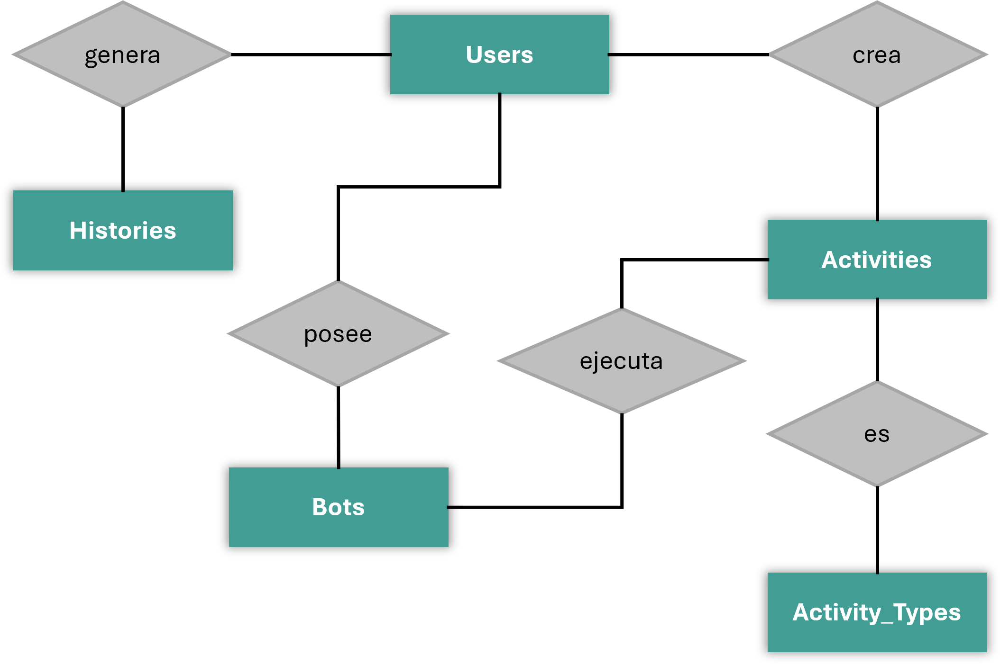
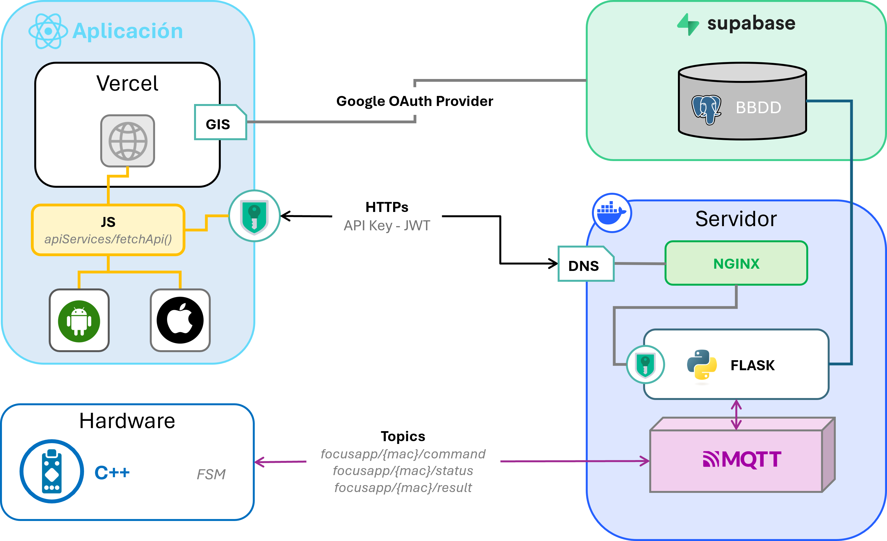

Sistema IoT integral compuesto por un dispositivo robótico físico, infraestructura backend y aplicación multiplataforma para la gestión de la productividad[cite: 488].
DEFENSA DE PROYECTO
Desarrollo de Aplicaciones Multiplataforma [cite: 464]
I.E.S. Ítaca [cite: 463]
El servidor está implementado en Python utilizando el framework Flask, organizando la API REST mediante blueprints (auth, activities, bot, history, users) protegidos por tokens de acceso JWT y con esquemas de validación de robustez basados en Pydantic[cite: 298, 364].
La base de datos relacional está alojada en Supabase [cite: 400] y consta de tablas estructuradas con restricciones e integridad para salvaguardar el histórico[cite: 261, 363]:

[ Render del Diagrama de la Base de Datos PostgreSQL ]'">El núcleo electrónico está integrado por el microcontrolador ESP32 (placa NodeMCU) acoplado de manera óptima a periféricos dedicados[cite: 103, 357]:
Inserción de una resistencia de 1 kΩ en la línea RX del DFPlayer Mini para erradicar ruidos por picos de tensión residual[cite: 105, 316]. Uso estratégico de un transistor NPN BC547 actuando como interruptor Low-Side para conmutar por hardware el pin BLK de la pantalla, logrando apagar físicamente la retroiluminación en modo SLEEP para maximizar el ahorro energético[cite: 105, 125, 128].
El firmware en C++ implementa una FSM jerárquica para controlar de forma asíncrona el comportamiento y expresiones del bot[cite: 529, 563]:
Al arrancar en ausencia de red, entra en modo Access Point (estado AP) levantando un servidor DNS interno y un Portal Cautivo[cite: 226, 361]. Proporciona un formulario HTML nativo incrustado en memoria flash que escanea el entorno (redes 2.4 GHz) para guardar de manera persistente en LittleFS las credenciales nuevas[cite: 227, 229, 358].
Sincronización en tiempo real mediante arquitectura Publish/Subscribe a través de un bróker MQTT aislado por la dirección MAC del hardware[cite: 73, 74, 244]:
La inyección del comando de inicio encapsula parámetros en formato JSON estructurado conteniendo duraciones y metadatos de audio[cite: 268]. El dispositivo asume de forma local y atómica la ejecución del tiempo, y al finalizar calcula las métricas publicando el resultado, garantizando la persistencia íntegra de la traza de productividad aun ante microcortes temporales de red[cite: 262, 328].

[ Render del Diagrama de Flujo y Arquitectura de Comunicación ]'">